Teste Univariado 1
Mistura de Binomial Negativa univariada com médias bem espaçadas e
dispersão constante: avaliação de estratégias de inicialização do EM
e critérios de seleção do número de componentes via biblioteca
flexmix
Primeiro de uma série de testes univariados controlados sobre a
recuperação de mistura finita de Binomial Negativa. Esta configuração
inicial fixa médias bem espaçadas
(\(\mu = 2,\ 12,\ 25,\ 50\)), dispersão constante
(\(\theta = 2{,}5\), comum a todos os componentes) e pesos
iguais (\(\pi_k = 0{,}25\)). Sob este regime, comparam-se
quatro estratégias de inicialização do algoritmo EM — Random multistart,
k-means + EM, CEM + EM e SEM + EM — e cinco critérios de seleção do
número de componentes — AIC, BIC, ICL, AIC3 e o Bootstrap Likelihood
Ratio Test. Toda a implementação utiliza a biblioteca
flexmix em R.
Pergunta investigada: em regimes de sobredispersão elevada com grupos latentes parcialmente sobrepostos, os critérios penalizados clássicos (AIC, BIC, ICL) subestimam sistematicamente o número de componentes? Em caso afirmativo, qual critério recupera a cardinalidade verdadeira, e qual estratégia de inicialização produz o melhor desempenho?
- Motivação: o problema da sobreposição
- Desenho experimental
- Dados simulados
- Estratégias de inicialização
- Critérios de seleção de componentes
- Resultados — Módulo A · Inicializações
- Resultados — Módulo B · Critérios penalizados
- Resultados — Módulo C · Bootstrap LRT
- Resultados — Módulo D · Modelo final e estabilidade
- Avaliação comparativa por método
- Sete conclusões metodológicas
- Próximos passos
- Código R
- Referências
1 · Motivação: o problema da sobreposição
A página Análises mostra que a Mistura de Binomial Negativa supera o K-means na recuperação dos grupos latentes em dados multivariados com 5 variáveis. Mas há um cenário onde até a NB enfrenta dificuldade: quando dois grupos têm médias próximas e a sobredispersão é alta, suas distribuições marginais se sobrepõem substancialmente — e o ganho em ajustar um componente extra fica diluído na variabilidade intra-grupo.
Este é precisamente o cenário isolado pelo experimento univariado controlado apresentado a seguir: restringe-se a variável consultas, com quatro grupos cujas médias (\(\mu_1 = 2,\ \mu_2 = 12,\ \mu_3 = 25,\ \mu_4 = 50\)) encontram-se espaçadas, ainda que a dispersão seja suficientemente elevada (\(\theta = 2{,}5\)) para tornar G3 (agudo, \(\mu=25\)) e G4 (atípico, \(\mu=50\)) quase indistinguíveis nos dados observados.
O experimento aborda duas questões empíricas:
- Sobre a inicialização. Diferentes pontos de partida do algoritmo EM (random, k-means, CEM, SEM) conduzem a soluções distintas em cenários de sobreposição? Em caso afirmativo, qual estratégia apresenta o melhor desempenho?
- Sobre o critério de seleção. Dentre AIC, BIC, ICL, AIC3 e Bootstrap LRT, qual recupera corretamente o número verdadeiro de grupos \(g=4\)?
2 · Desenho experimental
O experimento é uma grade fatorial \(4 \times 5 + \text{BLRT}\): quatro estratégias de inicialização cruzadas com cinco valores de \(g\), mais o teste sequencial Bootstrap LRT.
| Fator | Níveis |
|---|---|
| Dados | \(n=5\,000\) observações simuladas de uma mistura NB com 4 componentes verdadeiros (\(\boldsymbol{\mu} = (2, 12, 25, 50)\), \(\boldsymbol{\pi} = (0{,}25,\ 0{,}25,\ 0{,}25,\ 0{,}25)\), \(\theta = 2{,}5\)). |
| Inicialização | Random multistart · k-means + EM · CEM + EM · SEM + EM (4 estratégias × 20 reinícios cada) |
| Cardinalidade | \(g \in \{2, 3, 4, 5, 6\}\) (5 valores) |
| Critérios | AIC, BIC, ICL, AIC3, Bootstrap LRT (\(B = 99\)) |
| Estabilidade | Bootstrap não-paramétrico via ARI (\(B = 100\)) |
src/03_analises/04_univariado_init_comparacao.R. Saídas em
docs/assets/img/univariado_init/ (figuras + tabelas formatadas)
e src/03_analises/rds/univariado_init/ (CSVs).
3 · Dados simulados
A simulação reproduz exatamente o gerador da página Simulação restrito à variável consultas. A Figura 1 mostra a distribuição empírica das 5.000 contagens, separada por grupo verdadeiro.
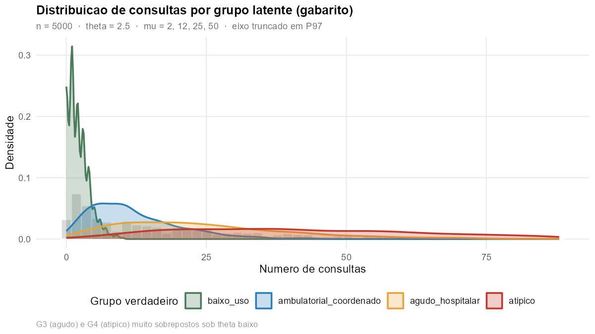
Figura 1. Densidades empíricas das contagens de consultas por grupo latente verdadeiro. G1 (verde, \(\mu=2\)) é claramente separado; G2 (azul, \(\mu=12\)) ocupa a região central; G3 (laranja, \(\mu=25\)) e G4 (vermelho, \(\mu=50\)) compartilham massa substancial na cauda direita — é essa sobreposição que torna a seleção de \(g\) difícil.
A leitura visual é direta: G1 e G2 são modas bem definidas e separadas. G3 e G4 formam um contínuo de cauda longa. Esse continuum é onde a NB univariada típica (com θ pequeno) deixa de distinguir componentes.
4 · Estratégias de inicialização
Comparamos quatro estratégias amplamente usadas na literatura. As três
primeiras seguem diretamente a comparação de Scharl, Grün & Leisch
(2010), que avaliaram oito estratégias no pacote flexmix — o
mesmo que usamos aqui.
“The choice of good starting values plays an important role. So far initialization strategies have only been investigated for data from a mixture of multivariate normal distributions. In this work several initialization procedures are evaluated for mixtures of regression models with and without random effects in an extensive simulation study on different artificial datasets.” Scharl, T., Grün, B. & Leisch, F. (2010). Bioinformatics 26(3), 370–377.
| Estratégia | Mecanismo | Referência |
|---|---|---|
| Random multistart | Vinte execuções de EM completo a partir de partições aleatórias dos rótulos \(z_i \in \{1,\ldots,g\}\); seleciona o ajuste com maior log-verossimilhança final. | McLachlan & Peel (2000) |
| k-means + EM | Aplica k-means em \(\log(1+\text{consultas})\), passa a partição resultante como semente do EM completo (uma única execução). | Scharl et al. (2010) |
| CEM + EM | Vinte execuções do Classification EM (E-step com atribuição
dura, classify="hard"); a melhor solução é refinada por
EM completo. |
Celeux & Govaert (1992) |
| SEM + EM | Vinte execuções do Stochastic EM (E-step amostra rótulos
da posterior, classify="random"); a melhor é refinada por
EM completo. |
Celeux & Diebolt (1985) |
M1 Random multistart
Fundamentação
O algoritmo EM constitui um otimizador local: garante a convergência para um máximo da log-verossimilhança na vizinhança do ponto de partida, sem assegurar, porém, que se trate do máximo global. Em misturas com componentes sobrepostos, a superfície de verossimilhança apresenta múltiplas modas, podendo o EM convergir para qualquer uma delas. A estratégia mais simples e geral consiste em executar o EM repetidas vezes a partir de pontos aleatórios distintos, retendo-se o ajuste de maior log-verossimilhança. Espera-se que pelo menos um dos arranques se aproxime da bacia de atração do máximo global.
Algoritmo
Para r = 1, 2, ..., 20:
1. Sorteie uma partição inicial z⁽⁰⁾ uniforme:
para cada i ∈ {1,...,n}, atribua z_i ∈ {1,...,g} com prob. 1/g
2. Inicialize μ_h, π_h a partir dessa partição (M-step inicial)
3. Itere o EM completo:
E-step: τ_ih = π_h · NB(x_i | μ_h, θ) / Σ_l π_l · NB(x_i | μ_l, θ)
M-step: π_h = (1/n) Σ_i τ_ih
μ_h = Σ_i τ_ih · x_i / Σ_i τ_ih
até |ℓ⁽ᵗ⁾ − ℓ⁽ᵗ⁻¹⁾| < 1e-7 ou t = 500
4. Guarde (ajuste_r, ℓ_r)
Retorne o ajuste com maior ℓ_r.
Prós e contras
| ✓ Prós | ✗ Contras |
|---|---|
| Funciona em qualquer modelo (NB, Gaussiano, regressão, etc.). | É o mais caro — 20× o custo de uma EM única. |
| Não pressupõe nada sobre a geometria dos dados. | Pode falhar se nenhum dos 20 starts cair na bacia certa. |
| É a referência metodológica clássica (baseline). | Shireman et al. (2017): mesmo com 30 starts, pmax ≈ 0,55. |
M2 k-means + EM
Fundamentação
Em substituição aos pontos aleatórios, emprega-se uma partição geométrica obtida por k-means como ponto de partida informado. O k-means é uma heurística de minimização da soma de quadrados intra-cluster, computacionalmente eficiente. Quando os componentes verdadeiros da mistura admitem separação aproximada no espaço Euclidiano, o k-means fornece uma partição inicial próxima da solução de máxima verossimilhança, restando ao EM a etapa de refinamento.
A transformação \(\log(1+x)\) é metodologicamente relevante: contagens
brutas exibem variância proporcional à média (comportamento de tipo
Poisson), de modo que valores elevados dominam a distância Euclidiana.
A aplicação de log1p aproxima a homocedasticidade — sem
ela, o k-means tenderia a operar essencialmente como um discriminador
binário "acima vs. abaixo de um limiar", desprezando a estrutura dos
componentes de menor magnitude.
Algoritmo
1. Aplique k-means nos dados log-transformados:
z⁽⁰⁾ = kmeans(log(1 + x),
centers = g,
nstart = 25, # 25 reinícios internos do próprio k-means
iter.max = 100)$cluster
2. Use z⁽⁰⁾ como partição inicial do EM completo (uma única execução):
iterar E-step / M-step até convergência
3. Retorne o ajuste único.
Prós e contras
| ✓ Prós | ✗ Contras |
|---|---|
| ~50× mais rápido que random multistart. | Pressupõe geometria esférica e equi-tamanho — viés se a mistura tiver componentes muito assimétricos. |
| Determinístico (dada a semente). | Pode falhar quando componentes se sobrepõem fortemente no espaço euclidiano. |
| Boa partida quando há separação geométrica clara. | A geometria do k-means não casa naturalmente com a forma da NB (cauda longa). |
M3 CEM + EM (Classification EM)
Fundamentação
O EM padrão realiza atribuição probabilística (soft): cada observação contribui para todos os componentes proporcionalmente à respectiva probabilidade posterior. O CEM, por sua vez, realiza atribuição dura (hard): cada observação é alocada ao componente de máxima probabilidade posterior, e apenas este componente incorpora a observação no passo M.
Modifica-se, com isso, o objetivo da otimização: o EM maximiza a log-verossimilhança observada dos dados, enquanto o CEM maximiza a log-verossimilhança completa, supondo conhecidas as atribuições. Em geral, o CEM apresenta convergência mais rápida e produz componentes mais bem separados, embora seja suscetível ao colapso de componentes de menor cardinalidade.
Algoritmo
Para r = 1, 2, ..., 20:
1. Partição inicial aleatória z⁽⁰⁾
2. Itere o CEM:
E-step (hard): ẑ_i = argmax_h τ_ih # atribuição DURA
M-step: π_h, μ_h estimados usando SÓ as obs com ẑ_i = h
até partição estabilizar ou t = 100
3. Guarde (ajuste_r, ℓ_r)
Escolha o melhor CEM (maior ℓ_r).
Refine com EM completo (classify = "weighted").
Retorne o ajuste refinado.
Prós e contras
| ✓ Prós | ✗ Contras |
|---|---|
| Convergência mais rápida por iteração. | Frágil para componentes pequenos: se < ~5% das observações caem num componente em uma iteração, ele colapsa. |
| Produz componentes bem separados (útil em alguns contextos). | Sob sobredispersão alta, a atribuição dura é arbitrária para obs na zona de sobreposição. |
| Matematicamente bem definido (Celeux & Govaert, 1992). | Tende a subestimar g quando há sobreposição real. |
M4 SEM + EM (Stochastic EM)
Fundamentação
O SEM aborda a limitação do CEM (colapso por atribuição dura) mediante a introdução de aleatoriedade no passo E: em vez de selecionar o componente de maior probabilidade posterior, amostra-se o componente de cada observação proporcionalmente à respectiva posterior. Cada iteração produz uma partição distinta, configurando o procedimento como uma cadeia de Markov no espaço de parâmetros.
A vantagem teórica reside na capacidade de evadir máximos locais: caso o EM determinístico convergisse para um ótimo local de qualidade inferior, a amostragem estocástica tende, ao longo das iterações, a deslocar a cadeia para regiões de maior verossimilhança.
Algoritmo
Para r = 1, 2, ..., 20:
1. Partição inicial aleatória z⁽⁰⁾
2. Itere o SEM:
E-step (stochastic): ẑ_i ~ Multinomial(τ_i1, ..., τ_ig)
M-step: π_h, μ_h estimados com ẑ sorteado
até log-verossimilhança estabilizar ou t = 100
3. Guarde o melhor ponto da trajetória
Escolha o melhor SEM. Refine com EM completo. Retorne o ajuste refinado.
Diferença crucial em relação ao CEM: o SEM não converge para um ponto fixo — ele oscila numa distribuição estacionária. Na prática, usa-se o ponto da trajetória com maior log-verossimilhança (ou a média dos últimos passos).
Prós e contras
| ✓ Prós | ✗ Contras |
|---|---|
| Aleatoriedade ajuda a escapar de ótimos locais. | Convergência mais ruidosa que CEM ou EM. |
| Adequado quando há suspeita de múltiplos máximos locais. | Ainda sujeito ao colapso de componentes pequenos (sorteio pode dar zero por azar). |
| Dá uma noção empírica de incerteza dos parâmetros. | Mais lento que CEM por causa do ruído. |
5 · Critérios de seleção de componentes
Para cada combinação inicialização × g calculamos quatro critérios penalizados clássicos e o Bootstrap LRT sequencial:
| Critério | Fórmula | Penalidade |
|---|---|---|
| AIC | \(-2\ell + 2p\) | Linear em \(p\) (parâmetros). Tende a superestimar \(g\). |
| BIC | \(-2\ell + p \log n\) | Cresce com \(n\). Padrão de fato em misturas finitas. |
| AIC3 | \(-2\ell + 3p\) | Compromisso entre AIC e BIC. Sugerido por Bozdogan para misturas. |
| ICL | \(\text{BIC} - 2 \sum_{i,k} \hat z_{ik} \log \hat z_{ik}\) | BIC + penalidade pela entropia da classificação. Favorece componentes bem separados. |
| Bootstrap LRT | Teste \(H_0\!: g\) vs \(H_1\!: g+1\) via reamostragem paramétrica | Calibração empírica da distribuição nula do LRT. Não-assintótica. |
O ICL e o BLRT merecem nota especial.
6 · Resultados — Módulo A · Inicializações
A Tabela 1 reporta log-verossimilhança, BIC, ICL, AIC e tempo computacional para todas as 20 combinações inicialização × g. A Figura 2 mostra a mesma informação graficamente.
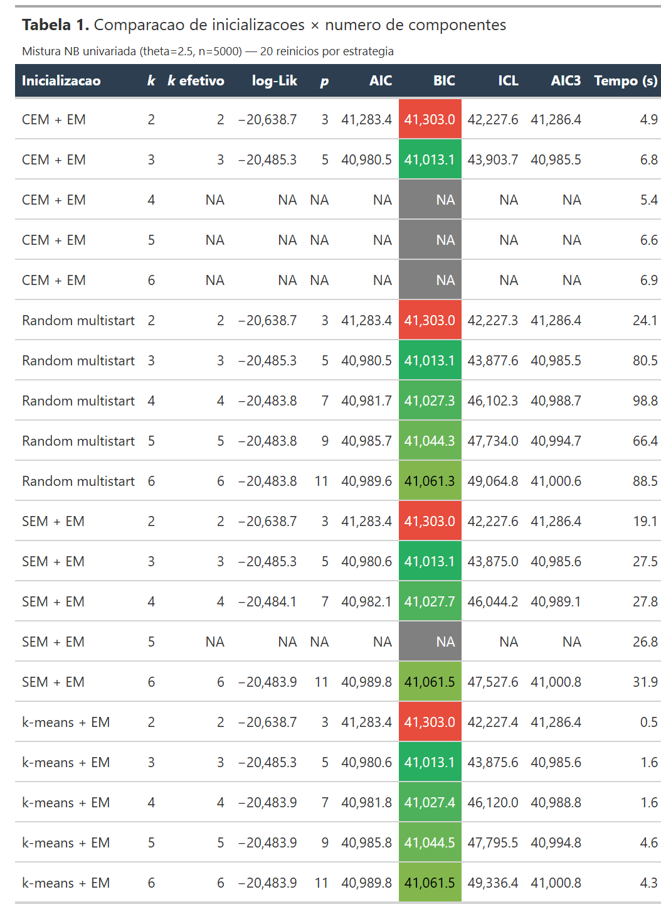
Tabela 1. log-verossimilhança, critérios penalizados e tempo por estratégia de inicialização e \(g\). Cor de fundo na coluna BIC: verde = menor (melhor), vermelho = maior. CEM falha para \(g \geq 4\) e SEM falha para \(g=5\) (componentes colapsam).
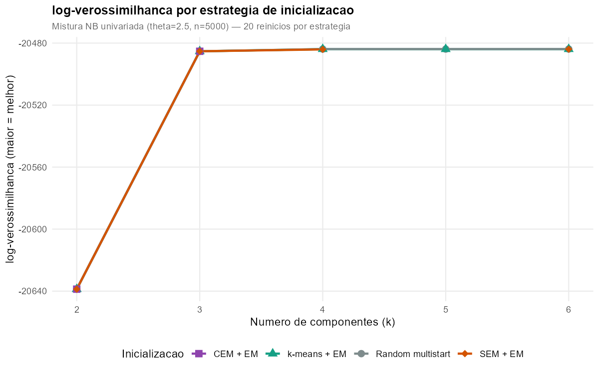
Figura 2. log-verossimilhança em função de \(g\) para cada estratégia. As quatro linhas se sobrepõem quase perfeitamente quando o ajuste converge — todas as inicializações encontram o mesmo máximo global. A queda visível entre \(g=2\) e \(g=3\) reflete a separação real entre G1+G2 e o continuum G3/G4; entre \(g=3\) e \(g=4\) o ganho é praticamente nulo.
Análise da Figura 2
Observam-se três aspectos relevantes:
- Equivalência entre as estratégias. Para cada valor de \(g\), a log-verossimilhança máxima é praticamente idêntica nas quatro inicializações (diferenças \(< 0{,}4\) unidades, compatíveis com ruído numérico). Conclui-se que o EM não fica retido em ótimos locais no problema em análise: todos os pontos de partida convergem para a mesma solução.
- Incremento marginal de \(g=3\) para \(g=4\). A diferença de log-verossimilhança entre os dois ajustes é de apenas 1,4 unidades para \(n=5\,000\). Esta magnitude determina o veredito de cada critério penalizado: o BIC penaliza \(\log(5000)/2 \approx 4{,}26\) por parâmetro; a transição \(g=3 \to g=4\) acrescenta dois parâmetros (uma média e um peso) — penalidade total \(\approx 8{,}5\), superior ao ganho de 2,8 em \(-2\ell\). Em consequência, o BIC rejeitará o modelo mais complexo.
- Não convergência do CEM. O CEM falha em três das cinco cardinalidades testadas (\(g\) = 4, 5, 6). A atribuição dura colapsa componentes de menor cardinalidade sob sobredispersão elevada, corroborando uma fragilidade documentada do método em dados de contagem.
“Random initialization yields very long runtimes compared with CEM or short runs of EM. However, the cluster results are similar.” Scharl, Grün & Leisch (2010), conclusão #4 do estudo de simulação.
“The impact of the cluster method used is much larger than the impact of the initialization strategy.” Scharl, Grün & Leisch (2010), conclusão #5.
Os resultados aqui obtidos corroboram empiricamente a observação canônica de Scharl et al. (2010): em situações nas quais o EM converge sem ficar retido em ótimos locais, a estratégia de inicialização mostra-se praticamente irrelevante para a qualidade da solução, importando apenas para o custo computacional.
7 · Resultados — Módulo B · Critérios penalizados
Adotando a melhor inicialização para cada \(g\) (em todos os casos: random ou k-means, empatados em log-verossimilhança), aplicam-se os quatro critérios penalizados. A Tabela 2 e a Figura 3 apresentam os resultados.
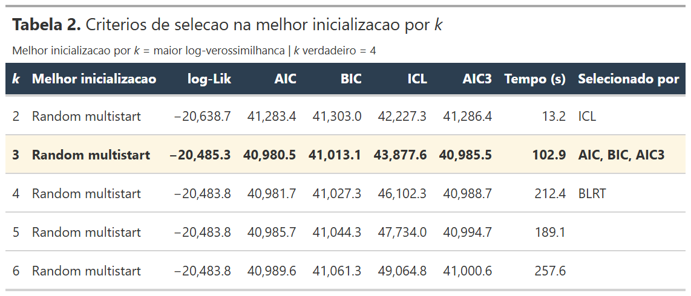
Tabela 2. Critérios de seleção avaliados na melhor inicialização para cada \(g\). A coluna Selecionado por indica quais critérios escolhem cada \(g\) como ótimo. A linha destacada em amarelo é o \(g\) final por consenso de votos (3).
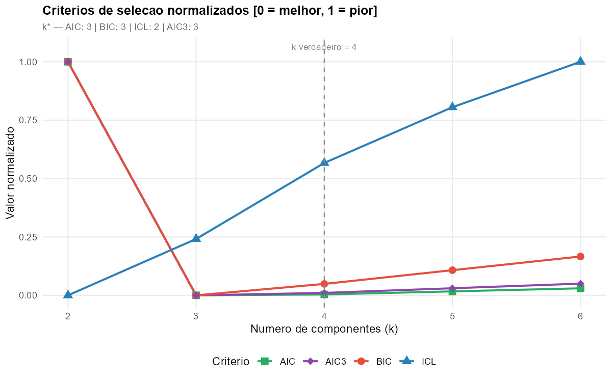
Figura 3. Os quatro critérios penalizados, normalizados para o intervalo [0, 1] (0 = melhor, 1 = pior) para permitir comparação visual. Linha tracejada cinza marca \(g=4\) (verdade). Nenhum critério penalizado consegue identificar o \(g\) verdadeiro: AIC/BIC/AIC3 escolhem \(g=3\); ICL escolhe \(g=2\) (ainda mais conservador).
Análise da Figura 3
O posicionamento dos mínimos de cada curva permite a seguinte interpretação:
- BIC, AIC e AIC3 → \(g=3\): os três critérios convergem para a inclusão do componente que separa o continuum G3/G4 da moda central (G1, G2), mas nenhum considera vantajosa a divisão desse continuum em dois grupos distintos. O ganho de log-verossimilhança não compensa o acréscimo da penalidade.
- ICL → \(g=2\): apresenta comportamento ainda mais conservador. A penalidade adicional decorrente da entropia da classificação cresce monotonicamente com \(g\), uma vez que a introdução de componentes sobrepostos torna as probabilidades posteriores progressivamente mais difusas. No cenário em análise, o ICL é, em termos práticos, monótono crescente: qualquer \(g > 2\) é penalizado.
A explicação envolve uma distinção conceitual importante: componente da mistura (objeto generativo — uma das distribuições NB que produziu os dados) é diferente de cluster bem separado (objeto descritivo — um grupo visualmente distinguível). Quando há sobreposição forte, esses dois números não coincidem: no problema em análise, há 4 componentes verdadeiros, mas apenas 3 clusters distinguíveis, pois G3 e G4 se confundem.
Biernacki, Celeux & Govaert (2000) e Celeux, Frühwirth-Schnatter & Robert (2019, cap. 7) estabelecem que o ICL é apropriado para a primeira pergunta — "em quantos clusters distinguíveis posso separar essas observações?" — e, portanto, pressupõe componentes bem separados. Baudry (2015) demonstrou formalmente que o ICL é consistente para o número de clusters, não para o número de componentes. Para a pergunta generativa — "quantas distribuições produziram esses dados?" — recomendam-se o BIC ou o Bootstrap LRT.
“ICL is to be preferred to BIC when the aim is to retrieve clusters represented by Gaussian components, while BIC remains preferable when one is interested in the modelling of the data distribution.” Biernacki, Celeux & Govaert (2000). IEEE Transactions on Pattern Analysis and Machine Intelligence, 22(7), 723.
8 · Resultados — Módulo C · Bootstrap LRT
O teste paramétrico de razão de verossimilhança via bootstrap (McLachlan, 1987) constitui a única alternativa que não depende de aproximações assintóticas. Para cada par \((g, g+1)\), simulam-se \(B=99\) amostras de tamanho \(n=5\,000\) sob o modelo ajustado com \(g\) componentes, recalcula-se o LRT em cada réplica, e constrói-se o p-valor empírico \(p = (\#\{\text{LRT}^{(b)} \geq \text{LRT}_\text{obs}\} + 1)/(B+1)\).
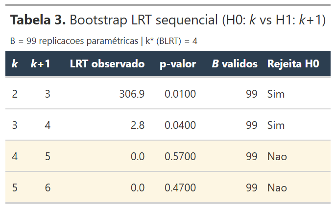
Tabela 3. Bootstrap LRT sequencial. A linha em amarelo (\(g=4 \to 5\), p = 0,57) é onde o teste deixa de rejeitar \(H_0\), fixando \(g^* = 4\).
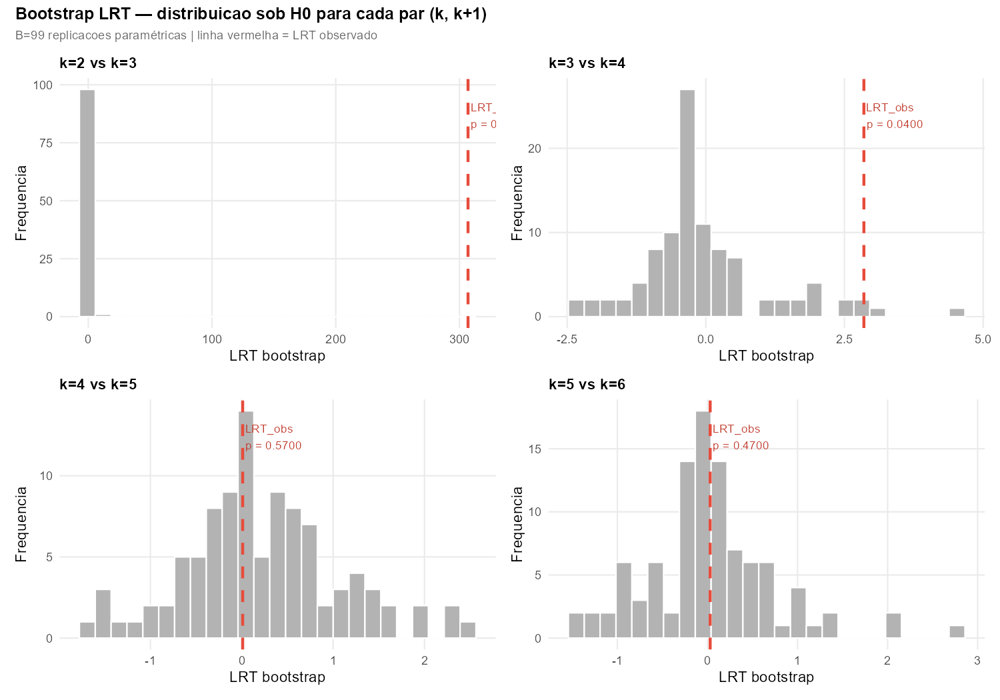
Figura 4. Quatro distribuições bootstrap da estatística LRT sob \(H_0\), uma para cada par \((g, g+1)\). A linha vermelha tracejada indica o LRT observado nos dados. Verifica-se que, em \(g=2 \to 3\) e \(g=3 \to 4\), o LRT observado localiza-se na cauda direita da distribuição (p < 0,05); em \(g=4 \to 5\) e \(g=5 \to 6\), o LRT observado aproxima-se de zero, em conformidade com a distribuição nula.
Análise da Figura 4
Os quatro painéis revelam um padrão que justifica plenamente a adoção do BLRT em detrimento da aproximação χ² assintótica:
- \(g=2 \to 3\): LRT observado = 306,9; distribuição bootstrap fortemente concentrada próximo de zero. Com \(p=0{,}01\), rejeita-se \(H_0\): verifica-se a existência de um terceiro componente.
- \(g=3 \to 4\): LRT observado = apenas 2,8 — magnitude reduzida. Contudo, a distribuição bootstrap sob \(H_0\) apresenta concentração ainda maior (a maioria das réplicas resulta em LRT inferior a 1). Em consequência, obtém-se \(p=0{,}04\), com rejeição de \(H_0\): identifica-se um quarto componente.
- \(g=4 \to 5\): LRT observado ≈ 0, p = 0,57; não se rejeita \(H_0\). Conclui-se que \(g=4\) é suficiente.
- \(g=5 \to 6\): idêntico padrão (p = 0,47), confirmando o limite superior.
“The likelihood ratio statistic \(-2\log\lambda\) does not have its usual asymptotic null distribution of chi-squared with the difference in the number of parameters under the two hypotheses, owing to the breakdown of the standard regularity conditions for the chi-squared approximation.” McLachlan, G. J. (1987). Journal of the Royal Statistical Society Series C, 36(3), 318–324.
9 · Resultados — Módulo D · Modelo final e estabilidade
Adotando o voto majoritário entre os cinco critérios (AIC=3, BIC=3, AIC3=3, ICL=2, BLRT=4), o consenso conduziria a \(g=3\). Avalia-se a estabilidade desse modelo por bootstrap não-paramétrico: reamostram-se, com reposição, \(B=100\) réplicas; reajusta-se a mistura com \(g=3\) em cada uma; calcula-se o ARI entre a partição original e a obtida em cada réplica.
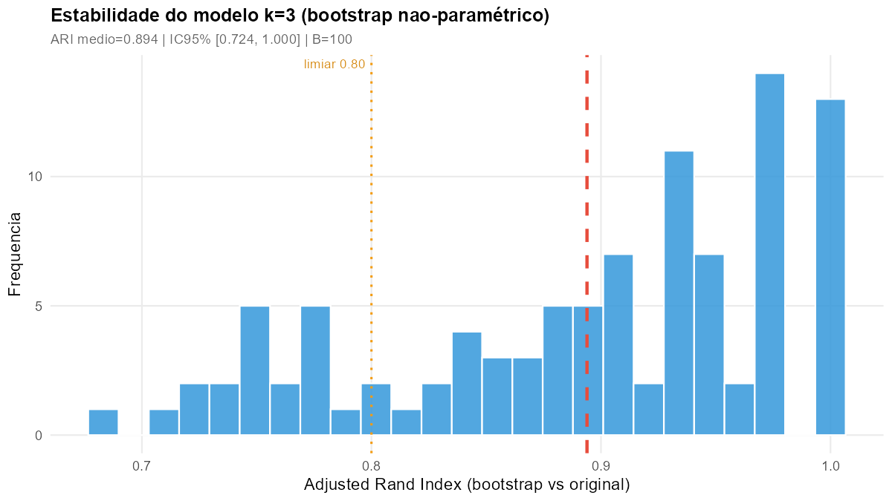
Figura 5. Distribuição bootstrap do Adjusted Rand Index entre a partição original (\(g=3\)) e as partições obtidas em \(B=100\) reamostragens. ARI médio = 0,894; IC 95% = [0,724; 1,000]. Limiar convencional de estabilidade (0,80) assinalado em laranja. O modelo \(g=3\) apresenta elevada estabilidade sob reamostragem.
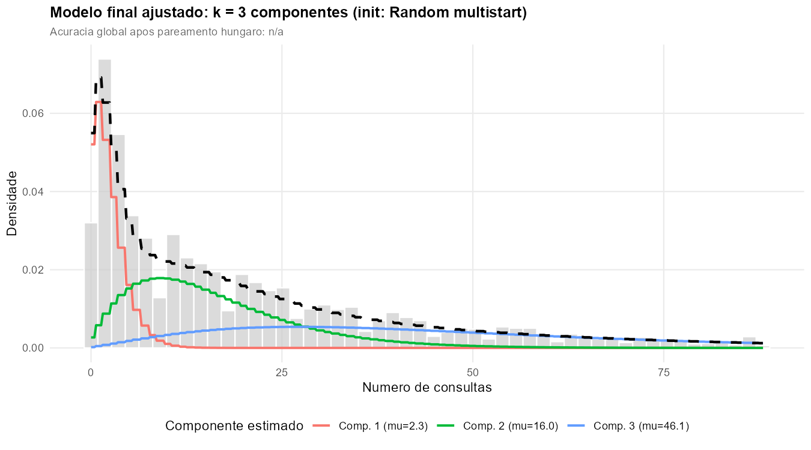
Figura 6. Modelo final por consenso (\(g=3\), inicialização random) sobreposto ao histograma dos dados. As três linhas coloridas representam as componentes NB ajustadas; a linha preta tracejada corresponde à mistura total. A terceira componente configura uma fusão entre G3 e G4 verdadeiros, em concordância com a interpretação de que os critérios BIC, AIC e ICL não foram capazes de separar o continuum da cauda direita.
10 · Avaliação comparativa por método
Os Módulos A–D evidenciaram que os quatro métodos atingem a mesma log-verossimilhança quando convergem, mas não detalham como cada um classifica as observações. Este módulo encerra a análise com uma comparação cabeça-a-cabeça no \(k\) verdadeiro (\(k = 4\)): métricas globais, recuperação paramétrica, diagnóstico por grupo, sobreposição entre soluções e visualização da classificação em uma dimensão.
10.1 · Métricas globais
A Tabela 5 reporta ARI, Acurácia (após pareamento húngaro), Pureza e F1 macro (média não ponderada das F1 por grupo) para os quatro métodos.
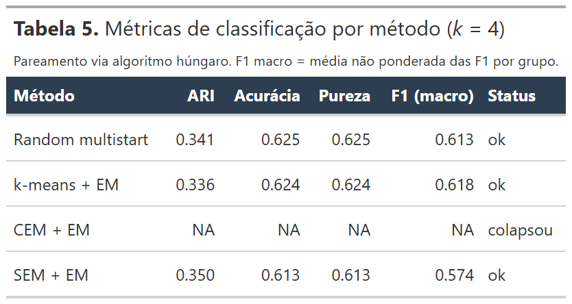
Tabela 5. Métricas de classificação por método em \(k=4\). Random multistart, k-means + EM e SEM + EM produzem resultados praticamente indistinguíveis; CEM + EM não convergiu nesta cardinalidade (colapso documentado nos Módulos A e D).
10.2 · Recuperação paramétrica
Para além da acurácia de classificação, avalia-se se o modelo recupera os parâmetros geradores: os \(\hat\mu_k\) e \(\hat\pi_k\) estimados, alinhados aos grupos verdadeiros via pareamento húngaro, são comparados aos valores simulados (\(\mu = 2,\ 12,\ 25,\ 50\); \(\pi = 0{,}25\) cada).
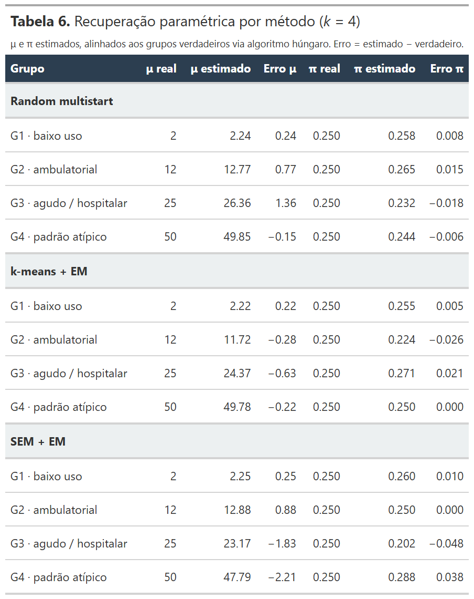
Tabela 6. Recuperação paramétrica (μ e π) por método e grupo. Os erros concentram-se em G3 e G4 — coerente com a sobreposição estrutural entre os dois grupos.
10.3 · Diagnóstico por grupo
A Tabela 7 desagrega o desempenho por grupo verdadeiro, reportando o número de observações reais, o número classificado corretamente, a sensibilidade (recall) e o F1 por classe.
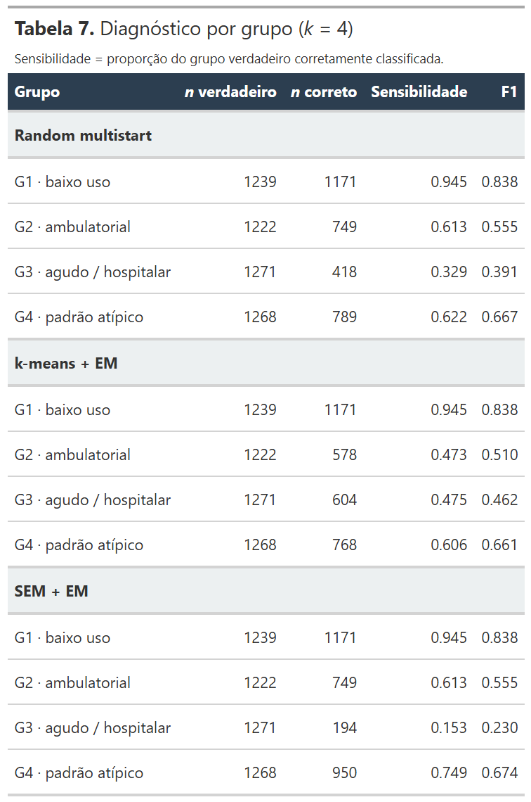
Tabela 7. Diagnóstico por grupo verdadeiro. G1 (baixo uso) é recuperado com sensibilidade próxima de 1 por todos os métodos; G3 e G4 apresentam quedas significativas, refletindo a sobreposição entre os componentes.
10.4 · ARI cruzado entre métodos
A matriz da Tabela 8 contém o ARI entre cada par de partições produzidas pelos métodos. Valores próximos de 1 indicam soluções equivalentes; valores intermediários indicam divergência sistemática.
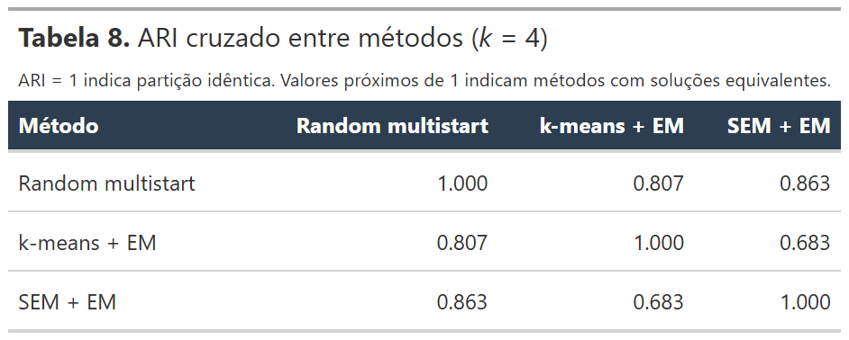
Tabela 8. ARI cruzado entre as partições de cada par de métodos. ARI próximo de 1 entre random, k-means e SEM+EM confirma que os três produzem essencialmente a mesma partição quando convergem.
10.5 · Densidades ajustadas
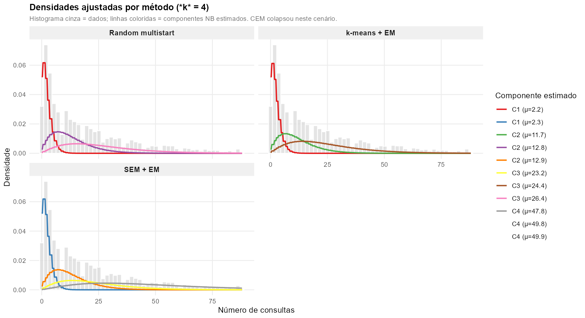
Figura 7. Histograma dos dados (cinza) com sobreposição das componentes NB ajustadas por cada método. A leitura visual confirma a equivalência entre Random, k-means e SEM+EM, e expõe o colapso do CEM (que, quando converge, frequentemente perde um componente).
10.6 · Classificação por grupo (visualização 1D)
A Figura 8 é o análogo univariado do gráfico "PCA-por-grupo" empregado no caso multivariado. Cada linha destaca um grupo verdadeiro (em cor viva); cada coluna mostra a classificação produzida por um método. A coluna verdadeiro serve como referência. Observações fora do grupo em foco são exibidas em cinza.
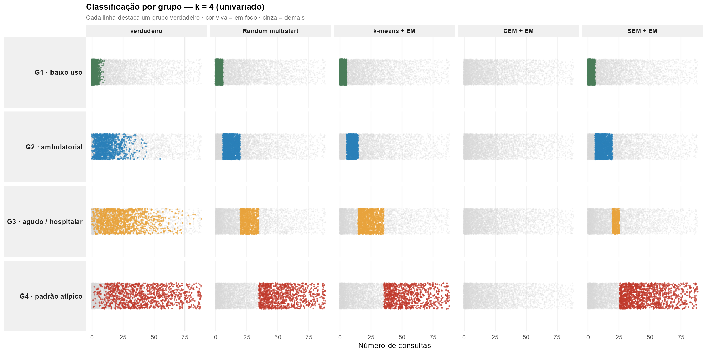
Figura 8. Strip-plot 1D — quatro linhas (grupos verdadeiros) por cinco colunas (referência + quatro métodos). O confronto entre a coluna verdadeiro e as colunas dos métodos revela a fronteira ambígua entre G3 e G4: nas linhas G3 e G4, os pontos coloridos pelos métodos ocupam regiões parcialmente sobrepostas, ao passo que G1 e G2 mantêm contornos nítidos.
10.7 · Certeza posterior por grupo
A certeza máxima de classificação \(\max_k \hat\tau_{ik}\) traduz quão confiante o modelo está em cada decisão. Estratificada por grupo verdadeiro, ela revela em quais grupos a sobreposição compromete a classificação.
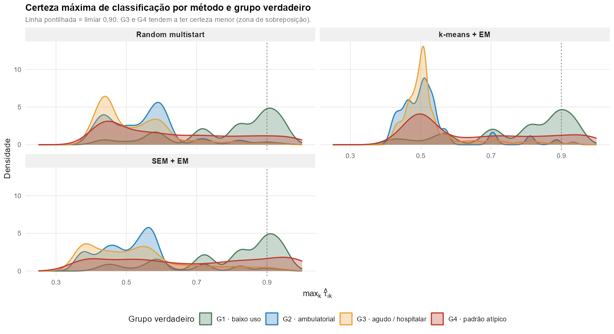
Figura 9. Densidades da certeza posterior máxima \(\max_k \hat\tau_{ik}\) por método (painel) e grupo verdadeiro (cor). G1 e G2 apresentam massa concentrada próxima de 1 (classificação confiante); G3 e G4 exibem caudas longas próximas de 0,5, evidenciando a zona em que a posterior é genuinamente ambígua.
10.8 · Erro por faixa do número de consultas
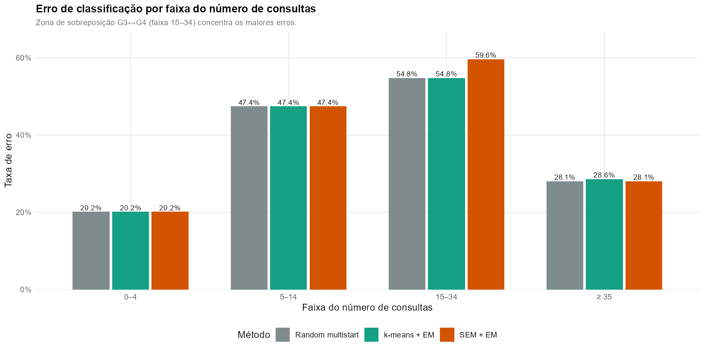
Figura 10. Taxa de erro de classificação por intervalo do número de consultas. A faixa 15–34 — região em que as distribuições de G3 e G4 mais se sobrepõem — concentra a maior parte do erro. Faixas extremas (\(\geq 35\) e 0–4) são classificadas com erro próximo de zero.
11 · Sete conclusões metodológicas
As conclusões a seguir encontram-se fundamentadas empiricamente nos resultados apresentados e, quando aplicável, referenciadas na literatura pertinente.
Síntese comparativa das estratégias de inicialização
A tabela a seguir consolida o veredito empírico para cada estratégia em três dimensões — qualidade da solução, velocidade e robustez — e indica o cenário em que cada uma se mostra preferencial.
| Critério | random | k-means | CEM + EM | SEM + EM |
|---|---|---|---|---|
| Qualidade da solução | ★★★ | ★★★ | ★ colapsa | ★★ instável |
| Velocidade | ★ | ★★★ | ★★ | ★★ |
| Determinismo | ★ | ★★★ | ★★ | ★ |
| Robustez a sobredispersão | ★★★ | ★★★ | ★ | ★★ |
| Quando usar | "default seguro" | escolha prática | grupos bem separados, n alto | suspeita de múltiplos ótimos locais |
12 · Próximos passos
O presente experimento contempla um único cenário (\(\theta=2{,}5\), quatro grupos, médias espaçadas). Para fortalecer as conclusões e configurar um experimento factorial passível de publicação, propõem-se as seguintes extensões:
- Replicação sob \(\theta\) variável (por exemplo, \(\theta \in \{1,\ 2{,}5,\ 5,\ 10\}\)), com o objetivo de delimitar o regime em que cada critério deixa de operar adequadamente. Hipótese de trabalho: para \(\theta \geq 10\), todos os critérios convergem para \(g=4\); para \(\theta \leq 1\), mesmo o BLRT pode apresentar falhas.
- Replicação sob diferentes espaçamentos de \(\boldsymbol{\mu}\), com vistas a isolar o efeito da sobreposição induzida pela proximidade das médias daquela decorrente da dispersão.
- Incorporação do short-EM (Biernacki, Celeux & Govaert, 2003) como quinta estratégia de inicialização — múltiplas execuções curtas de EM, com seleção da melhor para refinamento via EM completo — completando a comparação proposta por Scharl et al. (2010).
- Replicações estocásticas independentes (por exemplo, 30 simulações por configuração) para construção de distribuições empíricas de \(g^*\) por critério, permitindo avaliar a robustez e a variabilidade dos resultados aqui obtidos.
13 · Código R
O script completo (src/03_analises/04_univariado_init_comparacao.R,
896 linhas) é apresentado a seguir em quatro blocos correspondentes aos
módulos descritos neste capítulo. Os blocos auxiliares destinados à
geração de gráficos e tabelas formatadas (via pacote gt)
foram omitidos por brevidade, dado seu caráter estritamente de
apresentação.
12.1 · Configuração do experimento
Parâmetros da simulação, diretórios de saída e dependências.
# ── Dependências ────────────────────────────────────────────────────────────── library(dplyr); library(tidyr); library(ggplot2) library(flexmix); library(gt); library(patchwork) FLXMRnegbin <- countreg::FLXMRnegbin # ── Diretórios (resolvidos a partir da raiz do projeto) ─────────────────────── PROJ_ROOT <- encontrar_raiz() # sobe a árvore até achar poster_figures.R setwd(PROJ_ROOT) IMG_DIR <- file.path(PROJ_ROOT, "docs/assets/img/univariado_init") RDS_DIR <- file.path(PROJ_ROOT, "src/03_analises/rds/univariado_init") dir.create(IMG_DIR, recursive = TRUE, showWarnings = FALSE) dir.create(RDS_DIR, recursive = TRUE, showWarnings = FALSE) # ── Parâmetros do experimento ───────────────────────────────────────────────── set.seed(1234) N <- 5000 PI_TRUE <- c(0.25, 0.25, 0.25, 0.25) MU_TRUE <- c(2, 12, 25, 50) THETA_NB <- 2.5 # sobredispersão alta → grupos sobrepostos K_TRUE <- 4 K_GRID <- 2:6 # cardinalidades a testar NREP <- 20 # reinícios por estratégia BLRT_B <- 99 # replicações bootstrap LRT BLRT_NREP <- 3 # reinícios por ajuste bootstrap BOOT_B <- 100 # replicações bootstrap de estabilidade # ── Simulação dos dados (univariado: só consultas) ──────────────────────────── grupo_real <- sample(1:4, size = N, replace = TRUE, prob = PI_TRUE) consultas <- rnbinom(n = N, size = THETA_NB, mu = MU_TRUE[grupo_real]) df <- data.frame( grupo_real = factor(grupo_real, levels = 1:4, labels = c("baixo_uso", "ambulatorial_coordenado", "agudo_hospitalar", "atipico")), consultas = consultas )
12.2 · As quatro estratégias de inicialização
Núcleo do experimento. Cada estratégia é uma função que recebe o número
de componentes k e retorna o melhor ajuste obtido pela respectiva
política de exploração. A função interna fit_um() encapsula a
chamada ao flexmix — assim os quatro métodos diferem apenas
no argumento classify_mode (modo do E-step) e no número de
reinícios.
# ── Ajuste único (núcleo compartilhado pelas 4 estratégias) ─────────────────── fit_um <- function(cluster_init, k_val, classify_mode = "weighted", seed = 42, iter_max = 500, tolerance = 1e-7, minprior = 0.01) { set.seed(seed) ctrl <- list(iter.max = iter_max, tolerance = tolerance, minprior = minprior, classify = classify_mode) args <- list( formula = consultas ~ 1, data = df, k = k_val, model = FLXMRnegbin(theta = THETA_NB), control = ctrl ) if (!is.null(cluster_init)) args$cluster <- cluster_init tryCatch(suppressWarnings(do.call(flexmix, args)), error = function(e) NULL) } # ── M1 · Random multistart ──────────────────────────────────────────────────── # nrep ajustes EM partindo de partições aleatórias; retorna o melhor logLik. init_random <- function(k_val, nrep = NREP, seed = 100) { best <- NULL; best_ll <- -Inf for (i in seq_len(nrep)) { fit_i <- fit_um(cluster_init = sample.int(k_val, N, replace = TRUE), k_val = k_val, classify_mode = "weighted", seed = seed + i) if (!is.null(fit_i) && fit_i@k == k_val) { ll <- as.numeric(logLik(fit_i)) if (!is.na(ll) && ll > best_ll) { best_ll <- ll; best <- fit_i } } } best } # ── M2 · k-means + EM ───────────────────────────────────────────────────────── # k-means em log(1+x) gera a partição inicial; refina com EM completo (1 run). init_kmeans <- function(k_val, seed = 200) { set.seed(seed) if (k_val == 1L) return(fit_um(NULL, 1L, seed = seed)) km <- kmeans(log1p(df$consultas), centers = k_val, nstart = 25, iter.max = 100) fit_um(cluster_init = km$cluster, k_val = k_val, seed = seed) } # ── M3 · CEM + EM ───────────────────────────────────────────────────────────── # Classification EM (E-step duro) seguido de refinamento com EM completo. init_cem_em <- function(k_val, nrep = NREP, seed = 300) { best_cem <- NULL; best_ll <- -Inf for (i in seq_len(nrep)) { fit_i <- fit_um(cluster_init = sample.int(k_val, N, replace = TRUE), k_val = k_val, classify_mode = "hard", # <- CEM seed = seed + i, iter_max = 100, tolerance = 1e-5) if (!is.null(fit_i) && fit_i@k == k_val) { ll <- as.numeric(logLik(fit_i)) if (!is.na(ll) && ll > best_ll) { best_ll <- ll; best_cem <- fit_i } } } if (is.null(best_cem)) return(NULL) fit_um(cluster_init = clusters(best_cem), k_val = k_val, classify_mode = "weighted", seed = seed) # refinamento EM } # ── M4 · SEM + EM ───────────────────────────────────────────────────────────── # Stochastic EM (E-step amostra) seguido de refinamento com EM completo. init_sem_em <- function(k_val, nrep = NREP, seed = 400) { best_sem <- NULL; best_ll <- -Inf for (i in seq_len(nrep)) { fit_i <- fit_um(cluster_init = sample.int(k_val, N, replace = TRUE), k_val = k_val, classify_mode = "random", # <- SEM seed = seed + i, iter_max = 100, tolerance = 1e-5) if (!is.null(fit_i) && fit_i@k == k_val) { ll <- as.numeric(logLik(fit_i)) if (!is.na(ll) && ll > best_ll) { best_ll <- ll; best_sem <- fit_i } } } if (is.null(best_sem)) return(NULL) fit_um(cluster_init = clusters(best_sem), k_val = k_val, classify_mode = "weighted", seed = seed) }
12.3 · Critérios penalizados e Bootstrap LRT
extrair_metricas() calcula AIC, BIC, ICL e AIC3 a partir de um
ajuste do flexmix. simular_nb_mistura() gera
amostras paramétricas sob o modelo ajustado (necessário para o
bootstrap). blrt_passo() executa o teste de razão de
verossimilhança bootstrap para um par (k, k+1).
# ── Critérios penalizados a partir de um fit ────────────────────────────────── extrair_metricas <- function(fit) { if (is.null(fit)) return(NULL) ll <- as.numeric(logLik(fit)) np <- attr(logLik(fit), "df") list( k_efetivo = fit@k, logLik = round(ll, 2), np = np, AIC = round(-2 * ll + 2 * np, 2), BIC = round(-2 * ll + np * log(N), 2), ICL = round(ICL(fit), 2), AIC3 = round(-2 * ll + 3 * np, 2) ) } # ── Bootstrap paramétrico sob H0: k0 componentes ────────────────────────────── simular_nb_mistura <- function(fit, n_sim, theta_fixo = THETA_NB) { pesos <- prior(fit); pars <- as.numeric(parameters(fit)); k <- fit@k log_mus <- pars; thetas <- rep(theta_fixo, k) comp <- sample.int(k, size = n_sim, replace = TRUE, prob = pesos) y <- integer(n_sim) for (h in seq_len(k)) { idx <- which(comp == h) if (length(idx)) y[idx] <- rnbinom(length(idx), size = thetas[h], mu = exp(log_mus[h])) } y } # ── BLRT: H0: k vs H1: k+1 ──────────────────────────────────────────────────── # Distribuição nula obtida empiricamente por reamostragem paramétrica. blrt_passo <- function(fit_k0, fit_k1, B = BLRT_B, nrep = BLRT_NREP, seed = 1000) { set.seed(seed) k0 <- fit_k0@k; k1 <- fit_k1@k lrt_obs <- 2 * (as.numeric(logLik(fit_k1)) - as.numeric(logLik(fit_k0))) ll_best_k <- function(df_b, k_val) { best <- -Inf for (i in seq_len(nrep)) { m <- tryCatch(suppressWarnings(flexmix( consultas ~ 1, data = df_b, k = k_val, model = FLXMRnegbin(theta = THETA_NB), control = list(iter.max = 200, minprior = 0.01, tolerance = 1e-6) )), error = function(e) NULL) if (!is.null(m) && m@k == k_val) { ll <- as.numeric(logLik(m)) if (!is.na(ll) && ll > best) best <- ll } } if (is.infinite(best)) NA_real_ else best } lrt_b <- vapply(seq_len(B), function(b) { y_b <- simular_nb_mistura(fit_k0, N) df_b <- data.frame(consultas = y_b) ll0 <- ll_best_k(df_b, k0); ll1 <- ll_best_k(df_b, k1) if (anyNA(c(ll0, ll1))) NA_real_ else 2 * (ll1 - ll0) }, numeric(1)) lrt_v <- lrt_b[!is.na(lrt_b)] pval <- (sum(lrt_v >= lrt_obs) + 1) / (length(lrt_v) + 1) list(k0 = k0, k1 = k1, lrt_obs = round(lrt_obs, 2), pval = round(pval, 4), B_valido = length(lrt_v), lrt_boot = lrt_v) }
12.4 · Loop principal — grade Inicialização × k
O laço que materializa o experimento factorial: para cada combinação
estratégia × g, ajusta o modelo, extrai métricas e armazena o
fit. O resultado é o objeto fits (lista aninhada de ajustes)
e a tabela tab_init usada para gerar a Figura 2 e a
Tabela 1 da página.
# ── Lista das 4 estratégias ─────────────────────────────────────────────────── INITS <- list( random = init_random, kmeans = init_kmeans, cem_em = init_cem_em, sem_em = init_sem_em ) fits <- setNames(vector("list", length(INITS)), names(INITS)) tab_init <- list() for (init_nm in names(INITS)) { fits[[init_nm]] <- setNames(vector("list", length(K_GRID)), as.character(K_GRID)) for (k_val in K_GRID) { cat(sprintf(" %-8s k=%d ... ", init_nm, k_val)) t0 <- proc.time()["elapsed"] fit_kv <- INITS[[init_nm]](k_val) # <- ajusta usando a estratégia dt <- proc.time()["elapsed"] - t0 fits[[init_nm]][[as.character(k_val)]] <- fit_kv m <- extrair_metricas(fit_kv) # <- coleta AIC/BIC/ICL/AIC3 if (is.null(m)) { cat(sprintf("FALHOU (%.1fs)\n", dt)) tab_init[[length(tab_init) + 1]] <- data.frame( init = init_nm, k = k_val, k_efetivo = NA, logLik = NA, np = NA, AIC = NA, BIC = NA, ICL = NA, AIC3 = NA, tempo_s = round(dt, 1)) } else { cat(sprintf("logLik=%.1f | BIC=%.1f | %.1fs\n", m$logLik, m$BIC, dt)) tab_init[[length(tab_init) + 1]] <- data.frame( init = init_nm, k = k_val, k_efetivo = m$k_efetivo, logLik = m$logLik, np = m$np, AIC = m$AIC, BIC = m$BIC, ICL = m$ICL, AIC3 = m$AIC3, tempo_s = round(dt, 1)) } } } tab_init <- do.call(rbind, tab_init) saveRDS(fits, file.path(RDS_DIR, "fits.rds")) write.csv(tab_init, file.path(RDS_DIR, "tab01_inicializacoes.csv"), row.names = FALSE) # A partir daqui o script: identifica melhor init por k, plota Figura 2, # aplica BLRT sequencial (Módulo C), avalia estabilidade (Módulo D) # e gera as 4 tabelas formatadas com o pacote `gt`. # Ver script completo em src/03_analises/04_univariado_init_comparacao.R